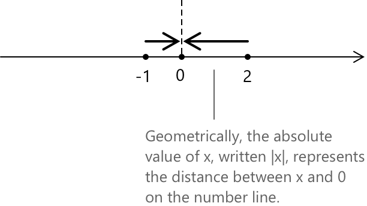
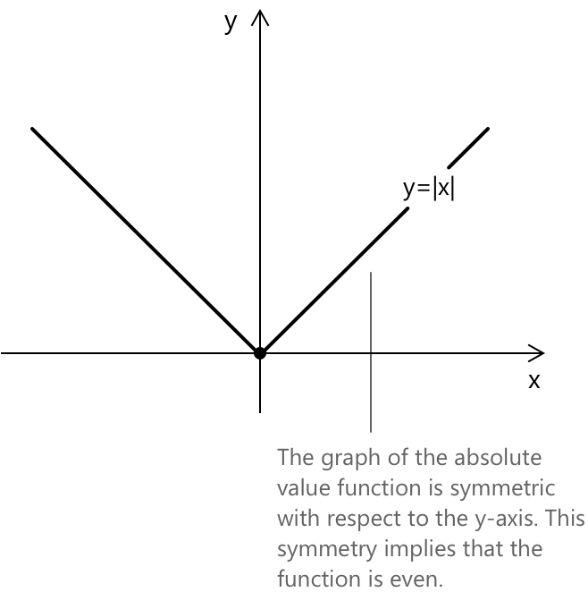
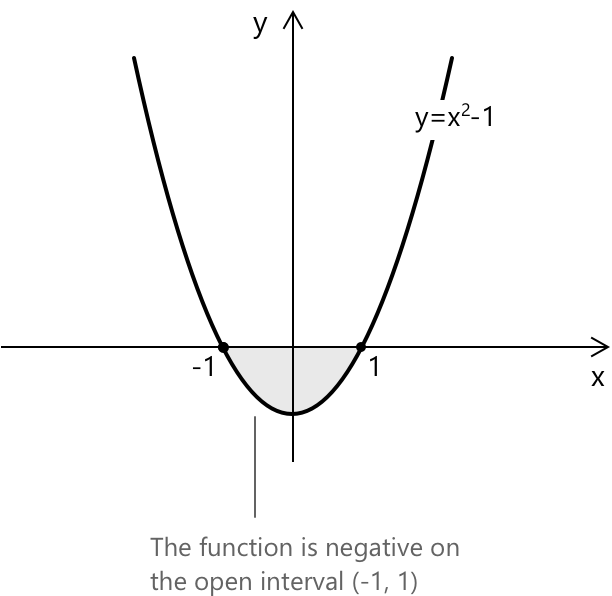
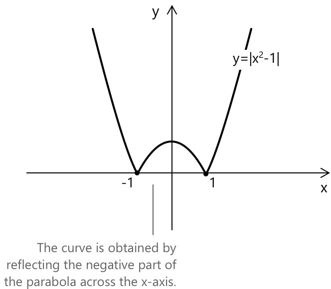

Функція модуля
Вступ
Модуль числа визначається наступним чином:
\[ |x| = \begin{cases} +x & \text{if } x \geq 0 \\[0.5em] -x & \text{if } x < 0 \end{cases} \quad \forall \, x \in \mathbb{R} \]
Функція модуля ставить у відповідність кожному дійсному числу його відстань від нуля на числовій прямій. Це означає, що від'ємні числа відображаються у їхні додатні аналоги, тоді як додатні числа залишаються незмінними, оскільки відстань завжди невід'ємна.

Більш загально, вираз модуля \(|x - a|\) можна інтерпретувати як відстань між точкою \(x\) та точкою \(a\) на числовій прямій. Маємо:
\[|x-a| = |a-x| \]
Фактично, можемо спостерігати, що \( a - x \) є просто протилежним до \( x - a \); іншими словами \(a - x = -(x - a)\). З цього випливає, що \(|a - x| = |- (x - a)| = |x - a|\). Це показує, що обидва вирази мають однаковий модуль, навіть якщо члени всередині дужок записані у зворотному порядку.
Графік та симетрія функції модуля
Функція модуля має вигляд:
\[ y = |x| = \begin{cases} +x & \text{if } x \geq 0 \\[0.5em] -x & \text{if } x < 0 \end{cases} \]
Графік \(y= |x|\) має вигляд:

Графік функції модуля \( |x| \) симетричний відносно осі y. Ця симетрія означає, що функція є парною, тобто вона задовольняє тотожність:
\[|{-x}| = |x| \quad \text{for all } x \in \mathbb{R}\]
Властивості
- Область визначення: \( \mathbb{R} \).
- Область значень: \( \mathbb{R}^+_0 \).
- Функція є спадною на \( (-\infty, 0] \) та зростаючою на \( [0, +\infty) \).
- Функція є парною, оскільки \( |{-x}| = |x| \).
- Функція є неперервною на всій дійсній прямій \( \mathbb{R} \).
- Функція є диференційовною всюди, крім точки \( x = 0 \), де вона має кутову точку.
- Функція має абсолютний мінімум у точці \( x = 0 \), де \( |x| = 0 \), і не має максимуму.
- Границі при \( x \), що прямує до крайніх значень області визначення: \[ \begin{align} \lim_{x \to -\infty} |x| &= +\infty \\[0.5em] \lim_{x \to +\infty} |x| &= +\infty \end{align} \]
Як побудувати графік модуля функції: відображення від'ємної частини
Розглянемо параболу, задану рівнянням
\[ y = x^2 - 1 \]
Цей графік містить частину кривої, що лежить нижче осі x, а саме на інтервалі, де функція набуває від'ємних значень.

Щоб знайти цей інтервал, розв'яжемо:
\[ x^2 - 1 < 0 \rightarrow -1 < x < 1. \]
Отже, функція \( y = x^2 – 1 \) є від'ємною на відкритому інтервалі \( (-1, 1) \), і графік опускається нижче осі x у цій області.
Щоб побудувати графік функції \( f(x) = |x^2 – 1| \), починаємо з графіка \( y = x^2 – 1 \). Залишаємо без змін ті частини графіка, що лежать на осі x або вище неї, і відображаємо відносно осі x усі частини, що спочатку були нижче. Отримуємо:

Це перетворення забезпечує, що всі значення функції стають невід'ємними, як того вимагає модуль.
Границі, похідні та інтеграли функції модуля
Фундаментальна границя, пов'язана з функцією модуля: \[ \lim_{x \to 0} \frac{|x|}{x} \] Ця границя не існує, оскільки лівобічна та правобічна границі різні: \[ \lim_{x \to 0^-} \frac{|x|}{x} = -1 \quad \text{and} \quad \lim_{x \to 0^+} \frac{|x|}{x} = 1 \] Така поведінка підкреслює недиференційовність \( |x| \) у точці \( x = 0 \).
Похідна функції модуля визначається кусково: \[ \frac{d}{dx} |x| = \begin{cases} 1 & \text{if } x > 0 \\[0.5em] -1 & \text{if } x < 0 \end{cases} \] Похідна не існує у точці \( x = 0 \), оскільки функція має кутову точку в цій точці.
Невизначений інтеграл функції модуля: \[ \int |x| \, dx = \frac{x^2 \cdot \operatorname{sgn}(x)}{2} + c \] де \( \operatorname{sgn}(x) \) — це функція знака, що визначається як: \[ \operatorname{sgn}(x) = \begin{cases} -1 & \text{if } x < 0 \\[0.5em] 0 & \text{if } x = 0 \\[0.5em] 1 & \text{if } x > 0 \end{cases} \]